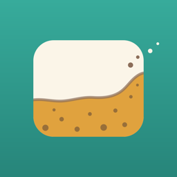

そうじどき に参加する
家族といっしょに、そうじを分担できます。
そうじどき がまだ入っていない方
いまはテスト版のため、App Store では入手できません。招待してくれた人に、テスト版（TestFlight）の入れ方を聞いてください。入れたあと、アプリを1回開いてから、もう一度このリンクをタップしてください。

家族といっしょに、そうじを分担できます。
いまはテスト版のため、App Store では入手できません。招待してくれた人に、テスト版（TestFlight）の入れ方を聞いてください。入れたあと、アプリを1回開いてから、もう一度このリンクをタップしてください。